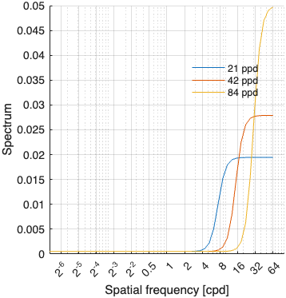
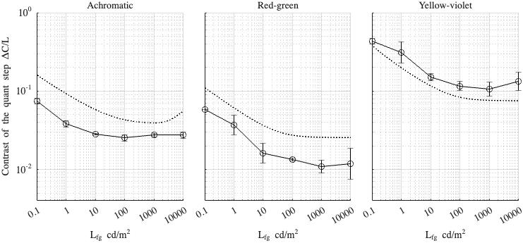

Fitting config: dither_spd, model: transducer
Fitting error (RMSE): 0.324657
Model parameters
p.beta = 0.923171; p.gs_num = [ 0.36218 0.197203 0.999992 ]; p.noise_params = [ 0.000496065 0.543998 0.209176 0.84006 0.695825 ]; p.dither_amp_params = [ 2.19126 0.717789 ]; p.blue_dither_params = [ 0.353243 6.67235 0.000517754 0.237577 ];
Model components
Blue noise dither spectrum

Dataset: [ar2025]
Scaling factor: 0.75324
Dataset: [kim2020]
Scaling factor: 2.12421
